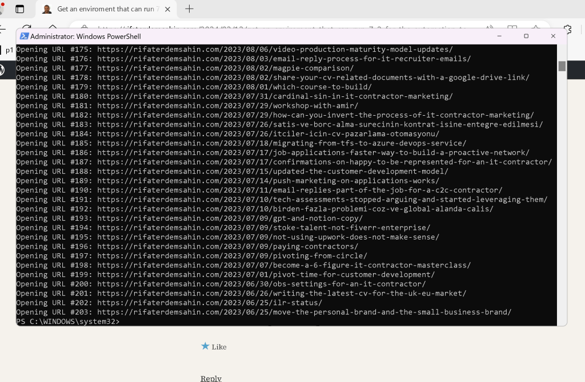
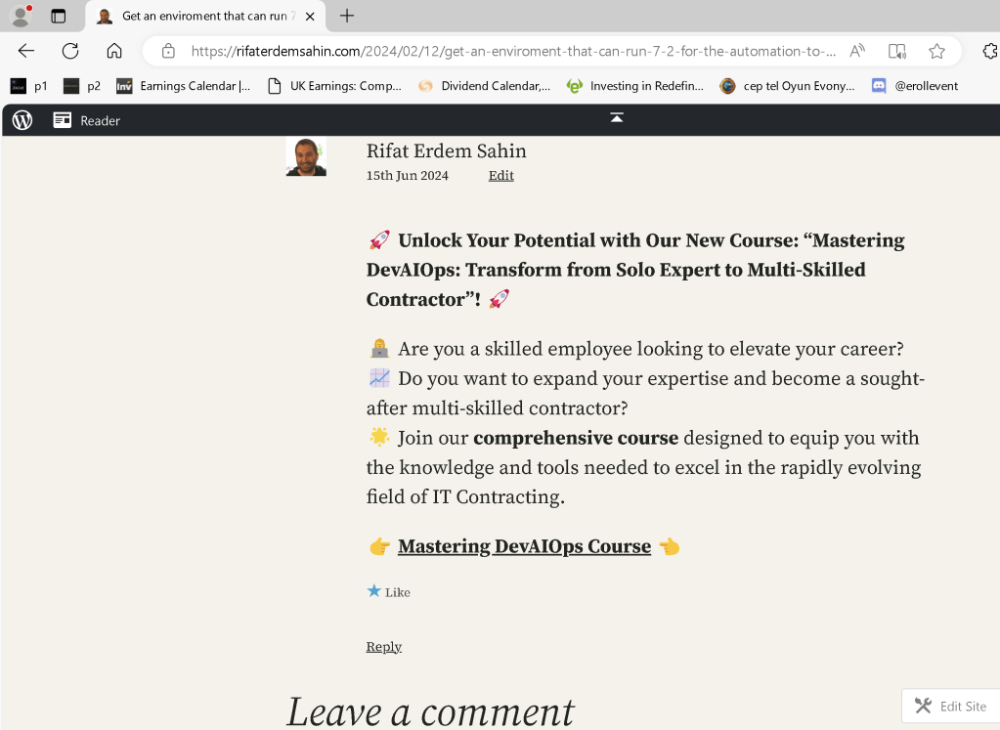

Automating WordPress Post Handling with PowerShell and Python


Managing a WordPress site often involves handling large volumes of content, including posts that need attention or review. In this tutorial, we'll walk through a step-by-step process to automate fetching posts based on a keyword and subsequently opening each post's URL using PowerShell. This can be particularly useful for tasks like reviewing or updating specific types of posts in bulk.
Step 1: Python Script for Fetching WordPress Posts
First, we'll use a Python script to interact with the WordPress API and fetch posts containing a specified keyword. Below is the Python script (fetch_wordpress_posts.py) that does this:
import requests
from requests.auth import HTTPBasicAuth
import logging
Configuration
USERNAME = '' # Your WordPress username
PASSWORD = '' # Your WordPress password
KEYWORD = 'contractor' # Keyword to search for in post content
OUTPUT_FILE = r'C:\path\to\post_links.txt' # File to store post URLs
WORDPRESS_URL = "https://public-api.wordpress.com/wp/v2/sites/your-site.wordpress.com/posts"
POSTS_PER_PAGE = 100 # Number of posts per page to fetch
Set up logging
logging.basicConfig(level=logging.INFO, format='%(asctime)s - %(levelname)s - %(message)s')
logger = logging.getLogger()
def fetch_all_posts_with_keyword(keyword, per_page):
all_posts = []
page = 1
while True:
try:
url = f"{WORDPRESS_URL}?search={keyword}&per_page={per_page}&page={page}"
logger.info(f"Request URL: {url}")
response = requests.get(url, auth=HTTPBasicAuth(USERNAME, PASSWORD))
logger.info(f"Response Status Code: {response.status_code}")
if response.status_code != 200:
logger.error(f"Request failed with status code: {response.status_code}")
break
posts = response.json()
if not posts:
break
all_posts.extend(posts)
logger.info(f"Fetched {len(posts)} posts from page {page}")
page += 1
except Exception as e:
logger.error(f"An error occurred: {e}")
break
return all_posts
def write_text_to_file(filename, text):
try:
with open(filename, 'w') as file:
file.write(text)
logger.info(f"Successfully wrote text to {filename}")
except Exception as e:
logger.error(f"Failed to write text to file: {e}")
def main():
logger.info("Script started")
posts = fetch_all_posts_with_keyword(KEYWORD, POSTS_PER_PAGE)
if posts:
logger.info(f"Successfully fetched {len(posts)} posts with keyword '{KEYWORD}'")
post_links = "\n".join([post['link'] for post in posts])
# Write post links to the file
write_text_to_file(OUTPUT_FILE, post_links)
else:
logger.error("Failed to fetch posts")
if name == "main":
main()
Step 2: PowerShell Script to Open Post URLs
After running the Python script and obtaining a file (post_links.txt) containing URLs of posts that contain the keyword "contractor", we use a PowerShell script to open each URL in a web browser. Here's the PowerShell script (open_urls.ps1):
Define the path to the text file containing the URLs
$linksFilePath = "C:\path\to\post_links.txt"
Check if the file exists
if (-Not (Test-Path -Path $linksFilePath)) {
Write-Host "The file containing links does not exist. Please check the path and try again."
exit
}
Read all URLs from the file into an array
$urls = Get-Content -Path $linksFilePath
Initialize the counter
$counter = 1
Iterate over each URL and open it in the default web browser
foreach ($url in $urls) {
# Print the URL and counter to the console for debugging purposes
Write-Host "Opening URL #${counter}:" $url
# Delay for 20 seconds before opening the next URL
Start-Sleep -Seconds 20
# Open the URL in the default web browser (in this example, using Microsoft Edge)
Start-Process "msedge" $url
# Increment the counter
$counter++
}
Conclusion
By combining Python for fetching WordPress posts via its API and PowerShell for automating the task of opening each post's URL, you can significantly streamline your workflow. This automation not only saves time but also reduces the risk of errors that can occur with manual handling of URLs and posts.
Automation scripts like these can be customized further based on specific requirements or integrations with other tools, enhancing your productivity in managing WordPress content effectively.
Give these scripts a try and see how they can simplify your WordPress post management tasks!
Feel free to adjust paths, URLs, and other configurations as per your setup. This approach provides a robust foundation for automating repetitive tasks related to WordPress post management.
References
https://github.com/rifaterdemsahin?tab=repositories
Unlock Your Potential with Our New Course: "Mastering DevAIOps: Transform from Solo Expert to Multi-Skilled Contractor"!
Are you a skilled employee looking to elevate your career? Do you want to expand your expertise and become a sought-after multi-skilled contractor? Join our comprehensive course designed to equip you with the knowledge and tools needed to excel in the rapidly evolving field of IT Contracting.
https://courses.devops.engineering/courses/oneperson-team-devops
Imported from rifaterdemsahin.com · 2024